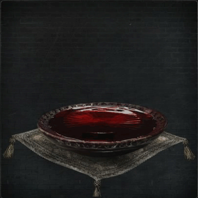
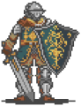

Ritual Blood |
||||
|---|---|---|---|---|
|  | ||||
|
||||
Ritual Blood is an item in Bloodborne that can be combined with other Ritual Materials to create a Chalice Dungeon.
Ritual Blood Usage
- Used to create a Chalice Dungeon
Location
- Can be purchased from Messengers
- Can be farmed in various Chalice Dungeons
Notes
- ??
Lore
- "When all is melted in blood, all is reborn" might describe the Mensis Ritual and The One Reborn.
Trivia
- Trivia goes here
Ratings
 small.jpg") Ritual Blood (1) |
Used in Chalices: Pthumeru Chalice, Pthumeru Root Chalice
|
 small.jpg") Ritual Blood (2) |
Used in Chalices: Central Pthumeru Chalice, Central Pthumeru Root Chalice, Hintertomb Chalice, Hintertomb Root Chalice
|
 small.jpg") Ritual Blood (3) |
Used in Chalices: Lower Pthumeru Chalice, Lower Pthumeru Root Chalice, Lower Hintertomb Chalice, Lower Hintertomb Root Chalice, Sinister Hintertomb Root Chalice
|
 small.jpg") Ritual Blood (4) |
Used in Chalices: Defiled Chalice, Cursed and Defiled Root Chalice, Ailing Loran Chalice, Ailing Loran Root Chalice
|
 small.png") Ritual Blood (5) |
Used in Chalices: Great Isz Chalice, Pthumeru Ihyll Root Chalice, Sinister Pthumeru Ihyll Root Chalice, Lower Loran Chalice, Lower Ailing Loran Root Chalice, Sinister Lower Loran Root Chalice, Great Isz Chalice, Isz Root Chalice, Sinister Isz Root Chalice
|
 Anonymous
Anonymous
- Anonymous
"When all is melted in blood, all is reborn"
Huh. This is probably what mensis did at yarhargoul to make the one reborn...
- Anonymous
God damn, that gif reminds me of the blood test scene in The Thing.
- Anonymous
Online spoiled me with the sheer amount of tier 5 bloods while farming gems, so going offline and not having access to that means actually needing to build the proper chalices and farm it specifically to get the single gem I want (Brainsucker gem drop from Isz layer 1).
I know it's a running joke, but when it comes to gem farming, Bloodborne really is pay-to-win lol
- Anonymous
God 4s are such a pain in the ass thank you to whoever did that segment
- Anonymous
Don't take these glyphs for granted, i think they "expire" with time, or might be misspeled, go look on Reddit or something
- Anonymous
Need help on finding a fstm spot for blood five, must be in offline
- Anonymous
man ritual blood 4 isnt ez to find, i asked on reddit and youtube and couldnt find it, thanks dude!
- Anonymous
- Anonymous
Ritual blood 5 one is lies the given glyph is not real thanks for wasting my time
- Anonymous
Ritual blood 2 can be farmed from the first chalice in layer one from the snatcher. Drop down and go through the tunnel near the ladders to get to him
- Anonymous
- Anonymous
To the person who uploaded the information about the ritual blood 4 location. Thank you
The lower pthumerian glyph ' 4uhnb7ky ' has 3 ritual blood (3) in a chest in the first extra area
- Anonymous
Good god almighty, the Gif used for the item picture on this page is terrifying, it gave me a slight jump when I saw it move after loading XD
- Anonymous
I like how no one mentions the skulls coming out of these things, as if the blood possesses the soul of some poor guy(or maybe several) who are about to be turned into a gateway to an eldritch location... maybe to never exist in their current plane of existence again.
- Anonymous
Hey I am stupid and can't edit this page, someone add Glyph "crd4ss4s" to ritual blood 5 farm, it has 4 ritual bloods (5) in 3 chests in the first room
- Anonymous
I utterly HATED this part of the game. The fact that you don't initially find enough Ritual Blood (4) while completing the Ailing Loran Chalice run in order to open the Defiled Chalice is a travesty to game design. This should have been fixed with subsequent patches, but now I see that it hasn't. You should NEVER have to farm anything in order to progress through the actual game. Absurd waste of time.
- Anonymous
Ok but if you're going to make the same item but on different "power LVL" you need to *****ing anote them. Their all called blood ritual wtf man sometimes I think bloodborne was rushed out...
- Anonymous
Ritual Blood 4
There's one in a giant chest in the Ailing Loran layer 1 pre-lamp room.
- Anonymous
I need a good OFFLINE farming spot for Ritual Blood (5). Any help please?
- Anonymous
- Anonymous
Go to layer 3 lamp and the snatcher in the room drops them.
Ritual blood 5 is incorrect. My friend only has Lower Pthumeru and he can buy Ritual Blood 5 from messengers. He has never opened a root chalice.
- shadow15151
- Anonymous
You guys got any good seeds with some Ritual Blood 4 on it? It seems that it's one of the rarest seeing how hard it is to find them on the Depth 3 dungeons
- Anonymous
I'm trying to get just 1 ritual blood 5 so I can go to the queen, but the chest only gives me tomb mold :(.
- Anonymous
I NEED RITUAL BLOOD (2) BUT CANT FIND IT ANYWHERE HELP PLEASE
- Anonymous
http://goo.gl/JifPxc i have found the best farming routes for almost every material (left out the easier ones) and also added chest locations where possible, please check it out and if it helps you a like, share and sub is much appreciated.
- Anonymous
If you have really low arcane, it'll be much harder to farm it. My arcane was 34, so my discovery was 180. After I put on an eye rune it became 240 and every farm spot gave me at least 1 ritual blood 4 most of the time (in the ailing loran chalice)
Ritual Blood (2) was unlocked for purchase from the blood echoes vendor after defeating Lower Pthumeru Chalice Dungeon,testing exactly what conditions are required to unlock each material.
- Anonymous
Add the cxsee9xf chalicw name to the ritula blood 5 it needs to be there . I cant join it
- Anonymous
I went to the two snatchers by those stairs to farm for RB(4) because I wanted to do Loran Chalice Dungeons, and I keep getting Twin Bloodstone Shards instead of Ritual Blood (4). Did a patch do this or something?
- Anonymous
Just made a rot/cursed Isz with x4 ritual blood 5 in the pre layer 1 side room. Take less than 1 min to farm all 4 (in chests). Glyph bd8mjpif
- Anonymous
Ailing Loran Chalice (standard). Its in the small treasure chest with the werewolf in the main area. There's a guillotine trap before the room. You get 2 in the chest and can be farmed.
Ritual Blood (3) was available to purchase after beating the Cursed Pthumeru Chalice, testing exactly what conditions are required to unlock each material.
- Anonymous
Update your farming locations. They do not drop that ***** anymore!
- Anonymous
I know a lot of people are going to be looking for Ritual Blood (4) to get into Ailing Loran to get the Beast Claw. The wiki says any Depth 3 and 4 dungeon can drop it; this is true, though rare. I skipped past the Lower Pthumeru Dungeons because I got tired of them and went straight to Hintertomb and could hardly get any RB4 to drop. Go to the Lower Pthumeru Chalice, I got about 5 in one run and the Snatchers there seem to almost always drop them. I could've saved myself a lot of time if I'd known this first.
I've gone through the only Depth 3 dungeon I can access a few times now. Each time I've found a grand total of one Ritual Blood (4). For *****s and giggles, I put on some runes to enhance Discovery. Lo and behold, I just got multiple Ritual Blood (4) in the same dungeon that used to give me one. Anyone else experience this? I figured non-Root dungeons had the same loot every time. Maybe not?
- Anonymous
Ailing loran layer 1, side path after the boss door. There are 2 ritual blood 4 in a treasure room across the wooden bridges. Watch out for the spiders.
- Anonymous
Is right. The watcher drops a ritual 5 every 20 or so times. Need to grind and that's with 50 in arcane
Ritual Blood (4) was available to purchase from the echoes vendor after completing the Great Pthumeru Ihyll Chalice Dungeon. It is impossible to tell at this moment whether or not the Yharnam Stone is the trigger for this or not. An educated guess would say that it is not because all other grades of Ritual Blood/Tomb Mould are unlocked by completing Chalice Dungeons (I have given details on the unlocks for all ritual materials in their respective pages).
- Anonymous
That the picture of the blood makes the same skull as logarius wheel. Are they connected
- Anonymous
I'm looking for a sh-- load of rot blood 5 for farming dungeons. Now it's freaking annoying to have to look for
- Anonymous
If you aren't feeling like raise my dungeons, selling price is insanely high! I've used them multiple times to level up.
- Anonymous
Okay. This seemed to frustrate a lot of people. Ritual Blood 2 CAN drop from regular monsters. Go to Root Pthuneru, Layer 1. Farm the 2 bag guys to the right. They've been consecutively dropping it for me.
With Arcane level around 30 and the eye rune equipped, the drop rate of ritual blood (4) from the sack boys was about 1 in 4 for me. It went quicker than expected.
0
+10
-1